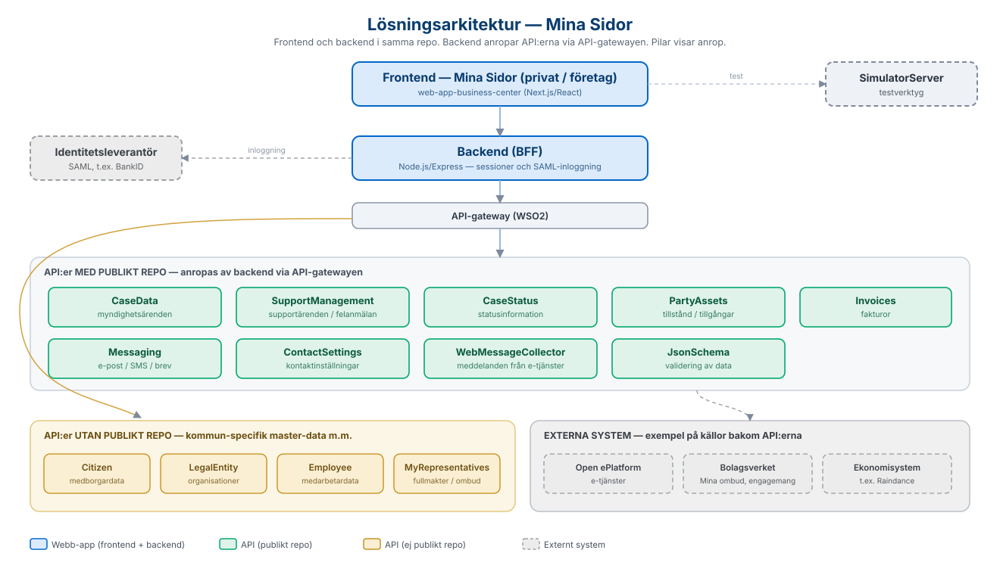

Här samlar vi länkar till de öppna källkodsrepon på GitHub som tillsammans bygger upp
helhetslösningen, samt de API:er som lösningen integrerar med.
Webb-appen
Webb-appen ligger i ett repo som innehåller både frontend och backend. Observera att repot
innehåller Mina Sidor för både privatpersoner och företagare - det framgår
inte av repots README (som bara nämner "Företagscenter - Mina sidor"), men det är en och
samma applikation med två lägen (/privat respektive /foretag).
Frontend - Next.js/React (TypeScript) byggd med Sundsvalls kommuns
designsystem (komponentbiblioteket @sk-web-gui). Sidorna är organiserade i sektioner för översikt, ärenden, beslut och dokument, fakturor
och profil, plus en vy för att välja vilket företag man vill företräda. Stöd för flera
språk finns via i18next.
Backend - Node.js/Express (TypeScript) som fungerar som BFF
(backend-for-frontend). Backend hanterar sessioner, sköter inloggning med SAML 2.0 mot en
identitetsleverantör (t ex för BankID) och vidarebefordrar anrop till API:erna via
API-gatewayen (WSO2) med klientnyckel och hemlighet. Prisma används för lokal datalagring.
Vilka API:er och versioner som används finns samlat i
backend/src/config/api-config.ts i repot - den listan är den auktoritativa
källan, och applikationsanvändaren i WSO2 måste prenumerera på de API:er som listas där.
Via konfiguration styrs också bland annat kommun-id, vilka tillståndstyper som visas och
om beslutsfunktionen ska vara aktiv, vilket gör att lösningen kan anpassas per kommun.
Lösningsarkitektur
Översikt över hur frontend, backend, API-gatewayen och API:erna hänger ihop. Pilarna visar
anrop. Bilden är härledd från webb-appens kod, API-listan i
api-config.ts och respektive API:s beskrivning.

Lösningsarkitektur — från frontend via backend och API-gateway till API:er, master-data och externa system.
API:er som lösningen integrerar med
Backend anropar ett antal API:er via API-gatewayen. De flesta finns som öppna repon på
Sundsvalls kommuns GitHub. Tabellen nedan beskriver vad varje API gör och länkar till
källkoden. Vissa API:er används främst i privatläget (t ex Citizen), andra främst i
företagsläget (t ex LegalEntity och MyRepresentatives), men merparten används i båda lägena.
Alla integrationer är inte alltid nödvändiga - vilka som behövs beror på vilka funktioner
som ska erbjudas. Till exempel behövs Invoices bara om fakturor ska visas,
och WebMessageCollector är bara aktuell om Open ePlatform används som
e-tjänsteplattform.
API
Beskrivning
Källkod
CaseData
Registrerar och hanterar myndighetsärenden - grunden för ärendelistan och ärendedetaljerna.
Håller tillgångar knutna till en person eller organisation, t ex tillstånd som parkeringstillstånd och färdtjänsttillstånd - används för beslut och dokument.
Följande API:er hanterar kommun-specifik master-data eller integrationer mot nationella
tjänster och har därför inget publikt repo. För att få dessa på plats krävs en
utvecklingsinsats anpassad efter den egna kommunens källsystem.
API
Beskrivning
Citizen
Medborgarinformation - uppslag och grunddata om privatpersoner.
LegalEntity
Information om organisationer och juridiska personer.
Employee
Medarbetarinformation, hämtas från Metadatakatalogen.
MyRepresentatives
Kontrollerar fullmakter - vilka företag en inloggad person får företräda, via Bolagsverkets tjänst Mina ombud. Grunden för företagsläget.